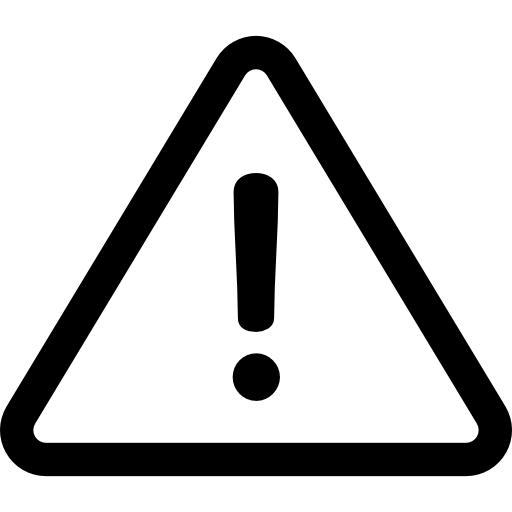

Stadsloket: afspraak maken en locaties
Parkeervergunning
Paspoort, ID-kaart en rijbewijs
Corona virus
Melding openbare ruimte en overlast
Verhuizing doorgeven
Grof afval
Kennisgeving en bekendmaking
Alle Onderwerpen
- Nieuws
- Afval
- Belastingen en heffingen
- Bestuur en organisatie
- Bouw- en verkeersprojecten
- Burgerzaken
- Buurten
- Contact
- Kunst en cultuur
- Ondernemen
- Onderwijs en jeugd
- Parkeren en verkeer
- Sport
- Subsidies
- Vrije tijd
- Werk en inkomen
- Wonen en leefomgeving
- Zorg en ondersteuning